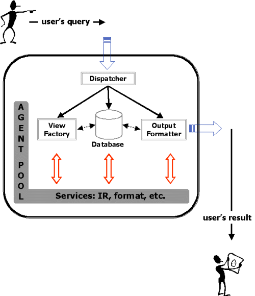

Overview:
Architecture
[Back to Overview]
Click on the component you wish to have more information about!

Copyright AKIRA Project,
University of Pennsylvania
Department of
Computer and Information Science
,
Institute for Research in Cognitive Science